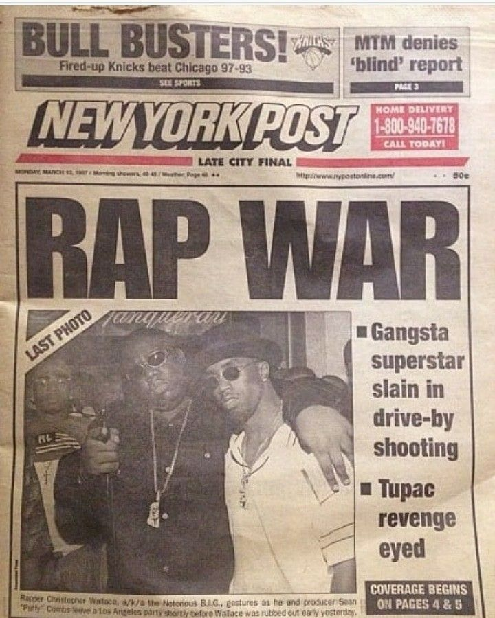
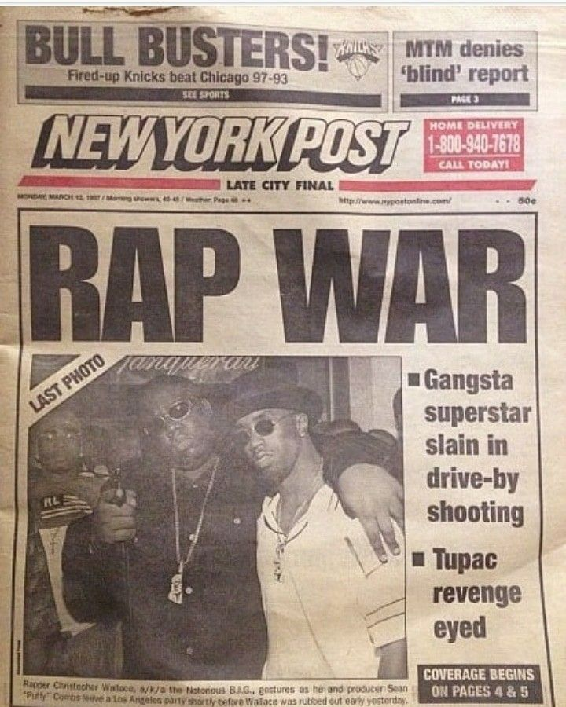
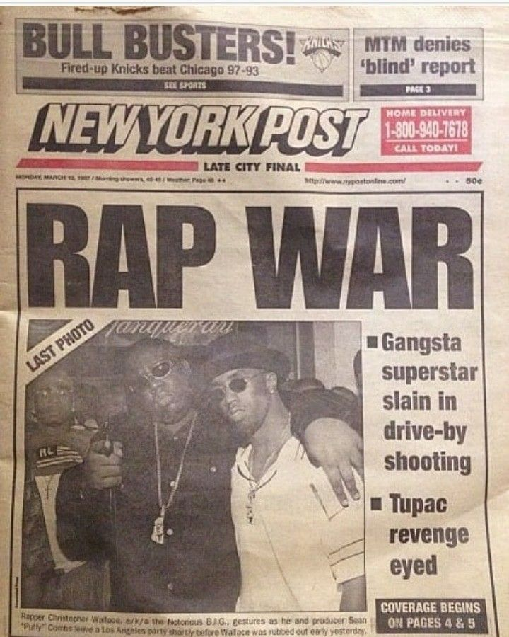
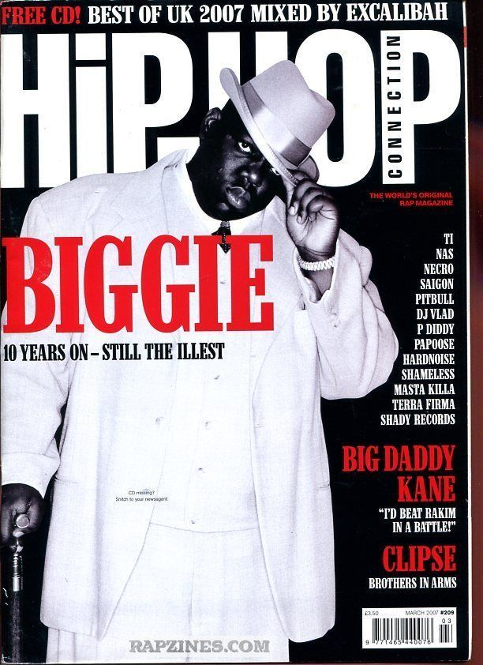
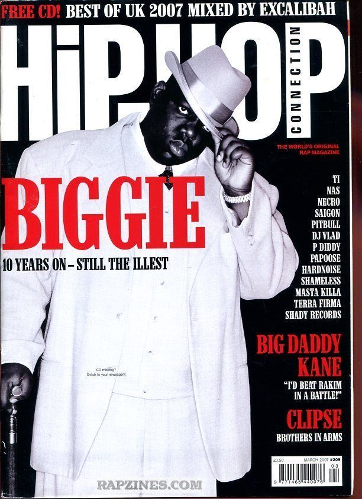

Two of rap's greatest icons had a feud that forever changed the genre. What started as friendship between Tupac and Biggie turned into a rivalry that defined an era, split the coasts, and ended in tragedy that still echoes through hip-hop today.
Tupac Shakur represented Death Row Records and the West Coast with fierce loyalty. Born in New York but raised in California, his music was raw, emotional, and politically charged. Songs like "California Love" and "Hit 'Em Up" showcased his aggressive style and willingness to call out his enemies directly.
Brooklyn's own Christopher Wallace, known as Biggie Smalls, was the king of the East Coast under Bad Boy Entertainment. His smooth flow and vivid storytelling on tracks like "Juicy" and "Big Poppa" made him an instant legend. While Tupac was direct and confrontational, Biggie's style was more laid-back but equally powerful.
 

Tupac and Biggie didn't just make great music, they turned hip-hop into a worldwide movement. Before their rivalry blew up, rap was still fighting for respect in the mainstream. But their beef put the genre on the map in a way nothing else had, making it impossible to ignore. They showed that rap could be raw, emotional, and incredibly powerful, whether they were going at each other on tracks or telling their own stories. The competition pushed both of them to create some of the most iconic albums in hip-hop history. Their influence is everywhere: in the music, the fashion, the culture. They proved that hip-hop could dominate pop culture, and every rapper who came after them benefited from the doors they opened. The East Coast-West Coast rivalry might have been messy, but it also made hip-hop one of the biggest genres in the world.